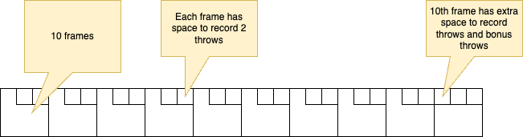

The Bowling Game: An Example of Equational Theory Development
Engineer's Notebook: An Equational Thinking Episode
"The person who says he knows what he thinks but cannot express it usually does not know what he thinks."
― Mortimer J. Adler, How to Read a Book: The Classic Guide to Intelligent Reading
Introduction
In 2000 Robert "Uncle Bob" Martin published The Bowling Game: An example of test-first pair programming, memorializing a TDD pair-programming session between Bob Koss and Bob Martin, during which the Bobs endeavor to implement a set of Java classes that combine to score a game of bowling.
Distinctly missing from the narrative: any actual definition of "the game of bowling". Here's Bob Martin's description of what they set out to build, which is the best indication of what they were trying to accomplish:
RCM: "It seems to me that the inputs are simply a sequence of throws. A throw is just an integer that tells how many pins were knocked down by the ball. The output is the data on a standard bowling score card, a set of frames populated with the pins knocked down by each throw, and marks denoting spares and strikes. The most important number in each frame is the current game score." [Emphasis mine]
What's missing is any "standard" that the solution can be verified against. In effect what the Bobs end up doing is defining their own axiomatic standard -- their code is the standard, so of course it does what it is supposed to do. Does it correctly score the definition of "the game of bowling" that the Bobs were trying to implement? We don't know. Neither actor produces a definition of "bowling". Bob Martin refers to "a standard bowling score card", but fails to reference an actual standard that he is working from.
What's missing is a logical definition of the bowling standard that Bob alludes to. Armed with such a tool, the development process in the narrative would have gone more smoothly and quickly, and it would have produced a provably correct (or provably incorrect) final software package. I imagine they also would have identified possible failures of the software they produced (described below).
Instead of a provably correct result, what the Bobs produced is software that self-asserts to conform to some standard, implemented internally by a set of inter-reliant Java classes. Most of the narrative concerns incremental development of the Java classes. The reader follows the internal intricacies and nitty-gritty of the Bobs' domain and problem space exploration with interest, but after all is said and done the reader cannot ratify or deny the assertion "a conforming implementation of the bowling score algorithm has been produced". 1
As with most produced software, there's no way to determine whether the final product actually fulfills its specification, because the specification is imprecise, collectively assumed, or perhaps never really existed in the first place. There's no way to verify that such software conforms with the standard it is intended to implement.
And like many software projects, this one ends at the terminus of exhaustion rather than at the provable completion of its stated task. Such projects end when the stakeholders are exhausted of resources, and someone with adequate authority can persuasively argue that the project is complete. In this case, the Bobs and the reader stand in for stakeholders, and the resource that is exhausted is creative imagination (and attention span). The end of the narrative expresses this state:
RSK: "That pretty much covers it. Can you think of any more meaningful test cases?"
RCM: "No, I think that's the set. There aren't any there that I'd be comfortable removing at this point."
RSK: "Then we're done."
RCM: "I'd say so. Thanks a lot for you help."
RSK: "No problem, it was fun."
A much more convincing TDD episode would have started with a logical, objectively provable definition of the target algorithm, and incrementally developed a Java implementation with individual test cases proven to meet the standard.
In this article I will develop a definition of "bowling". That is, a definition of the standard against which any integer sequence reduce function can be applied to verify the function agrees with the standard 2. I will use the smtlib2 language and follow the techniques I describe in the companion article "OSM specs in smtlib2".
The Bowling Score Card Standard
The governing body for bowling in the US is the United States Bowling Congress (USBC). This organization publishes a standard for scoring a game of bowling, which somewhat matches the Bobs' internal understanding of the game, with some key differences:
-
The official version does not support the concept of an incomplete game. A game consists of all necessary throws 3 to complete 10 frames: up to 2 throws plus up to two bonus throws forms a frame. The bonus throws for frame
Nare synonymous with the normal throws of theN+1-th frame. Legal games can be produced from as few as 12 throws (12 consecutive strikes), and as many as 21 throws (any sequence of 21 throws that includes no strikes). -
In the official version of bowling, a throw cannot be represented by a single integer. In the TDD narrative, Robert Koss and Bob Martin quickly convince themselves, incorrectly, that a single integer is sufficient to store the information of throw. Here's Bob Martin's words from above, again repeated to show where the unchallenged assertion is made very early in the narrative:
RCM: "It seems to me that the inputs are simply a sequence of throws. A throw is just an integer that tells how many pins were knocked down by the ball. The output is the data on a standard bowling score card, a set of frames populated with the pins knocked down by each throw, and marks denoting spares and strikes. The most important number in each frame is the current game score."
Again a little later, the assumption is reinforced:
RSK: "Do you have a clue what the behavior of a Throw object should be?"
RCM: "It holds the number of pins knocked down by the player."
The USBC standard supports a legal throw, for which the number of pins knocked down would be a valid representation. The standard also says that a throw may be a foul, recorded on the score card with the letter "F", and adding no pins the the accumulate score. The Bobs' model is inadequate to produce a score card for all valid bowling games, because some valid games include fouls.
This may seem like persnickety special-casery, and perhaps it is, but it is evidence that the Bobs' were not developing any objectively provable implementation of a standard, but instead were simply encoding a subjectively-derived psuedostandard. This will be the case with all software developed without an objectively verifiable logical model -- today this includes virtually all software. There is no practice of developing software to meet a mechanically verifiable model.
-
The official version supports, though does not require, a "split" significator associated with the first throw in a frame. This is a special demarcation indicating the remaining upright pins after a first throw are in a configuration that meets a specific "split" rule. A split is basically a configuration of pins that can be particularly difficult to knock down in the frame's second throw.
The TDD narrative's technique for developing a test suite, by constructing partially-complete games and testing the state of those games, coincidentally mimics the way that the USBC official scoring standard is written. This is a constructivist pattern, describing how to incrementally accumulate a single throw into a game in progress. The standard also implies a terminal condition which ends the process, producing a completed game. The constructivist description ensures that if you apply the incremental accumulation rules to a sufficient number of throws, you will end up with a valid, completed game.
In the TDD narrative, most of the Bobs' test cases score incomplete games -- games in progress. We can see Bob Martin briefly wrestle with the issue of game incompleteness at one point:
RSK: "Hmmmm... if we call add(10) to represent a strike, what should getScore return? I don't know how to write the assertion, so maybe we're asking the wrong question. Or we're asking the right question to the wrong object."
RCM: "When you call add(10), or add(3) followed by add(7), then calling getScore on the Frame is meaningless. The frame would have to look ahead at later frames to calculate its score. If those later frames don't exist, then it would have to return something ugly like -1. I don't want to return -1."
The USBC standard does not specify the "value" of an incomplete frame or an incomplete game, either. I would argue the Bobs were chasing an illusion -- there is no correct nor incorrect value for an incomplete frame according to any standard. Any assertion about the "correct" value is perfectly undecidable. The entire question of whether or not the Bobs' bowling implementation conforms to any standard is also perfectly undecidable.
Developing Equations for a bowling score card
The missing piece in Bob Martin's TDD narrative is a verifiable logic model. Armed with such a model, any input and any output, even intermediate state output, can be verified to be in or out of compliance using an automated logic solver. SMTLIB2 is a capable language for logic modeling, readily understandable to software professionals because it is very Lisp-like. Several logic solvers exist that accept smtlib2 models, such as Microsoft's Z3, CVC5, and several others.
Let's start by reviewing a bowling score card, and develop a logical model of a bowling game from it.

The score card reflects how the game of bowling structured: there are 10 "frames", or what might be called "turns" in other games. A player scores from 0-30 points in each frame. The score card represents each frame in the game as one of 10 squares, read from left to right.
In the square for each frame we traditionally write the accumlated total points (the sum of points in all previous frames plus the points scored in the current frame) rather than the points scored in each frame individually. This is a convention, arising from the fact that game used to be scored manually. The final game score is the same whether we score each frame individually and sum at the end or accumulate as the game progresses.
There are areas towards the top of each frame's square for representing the 1 or 2 normal throws that are part of each frame. Each frame's score also includes the value of 0, 1 or 2 additional bonus throws 4. The standard score card does not represent the bonus throws, as the bonus throws in one frame are synonymous with the normal throws of the subsequent frame. This is true for all frames except the 10th. The 10th frame has no subsequent, so the 10th frame does have extra space to represent its bonus throws.
The rules and traditions for where and how to display each throw in a frame, as well as the tradition of displaying a running sum, are visualization rules. The formal logical model we now develop is easily transformed into this kind of representation, but the model is actually a bit simpler. We will define the model of a "game in progress" -- a more relaxed model than a "completed game" model, allowing for incompleted frames.
Representing a Throw
Let's begin with the simplest concept: a single throw. Primarily we would want to represent a set of pins knocked down. We could either represent this as an integer value (the total number of pins knocked down), or a bitvector of width 10 representing the standing-up/knocked-down state of each individual pin 5.
There is a very good reason to choose bitvector over integer: SMT solvers don't deal wonderfully with inifinite value ranges, and integer is an infinitely-valued type, while bitvector is not. SMT solvers are great at deducing from first principals, but they aren't great at exploring bespoke value ranges, such as "the infinite set of integers, where the values between 0-10 are treated differently than the rest of the range", especially if the range disjuncture boundaries get obscured in multiple levels of logic.
The general rule I've learned with SMT solvers: always opt for a finite-valued type when you can. When the SMT solver has to consider complicated, bespoke rules (like the rules of a game of bowling), it can always decide to "brute force" a proof by trying all possible values in a range, or all possible branches in a logic tree. But if the range is infinite, then it has to rely on hueristics and deduction from first principals only, which can lead to infinite loops, exploration of very sparsely populated ranges, and other problems that lead a proof engine astray.
I will use a bit value "0" to represent a standing pin, and "1" to represent a knocked-down pin.
File "throw.smt2"
(declare-datatype Throw (
(throw
(pins (_ BitVec 10)))))
Note: the syntax
(_ BitVec 10)means "a bitvector of width 10". smtib2 has a convenience representation for static bitvector values:#b0011001011-- this is a 10-bit wide bitvector with values "0011001011" for the 10 bits, respectively. There are also a bunch of bitvector operators available:bvand,bvor, and other bit-by-bit operators;bv2natto convert a bitvector to a binary numeric value;zero-extendandextractround out the operators we will need to convert a bitvector to a count of fallen pins.
There are 2 functions I know I'm going to be writing, and I will want to start throwing down test-cases 6 that rely on the behavior of these functions soon.
throw.points: a function computing the point score of any throw. This is just the count of "1" bits in the bitvector.throw.valid: a predicate differentiating valid throws from invalid ones. The way it is written now, I don't think an invalid instance ofThrowexists, but I'm going to need to add foul throws and incomplete throws shortly. Validation will be necessary, so best to get the scaffolding of that down.
File "test-case.throw.validation.throw.points-fun.smt2":
#include "throw.smt2"
(define-const test-data.throw.all-zeros Throw (throw #b0000000000))
(define-const test-data.throw.all-ones Throw (throw #b1111111111))
(define-const test-data.throw.all-but-lsb-0 Throw (throw #b0000000001))
(define-const test-data.throw.all-but-lsb-1 Throw (throw #b1111111110))
(define-const test-data.throw.all-but-msb-0 Throw (throw #b1000000000))
(define-const test-data.throw.all-but-msb-1 Throw (throw #b0111111111))
(define-const test-data.throw.lower-half-0 Throw (throw #b1111100000))
(define-const test-data.throw.upper-half-0 Throw (throw #b0000011111))
(define-const test-data.throw.alt-bits-0 Throw (throw #b1010101010))
(define-const test-data.throw.alt-bits-1 Throw (throw #b0101010101))
(define-const test-data.throw.random-dense Throw (throw #b1101110111))
(define-const test-data.throw.random-sparse Throw (throw #b0001001010))
;; prove all these throws are valid
(assert
(and
(throw.valid test-data.throw.all-zeros)
(throw.valid test-data.throw.all-ones)
(throw.valid test-data.throw.all-but-lsb-0)
(throw.valid test-data.throw.all-but-lsb-1)
(throw.valid test-data.throw.all-but-msb-0)
(throw.valid test-data.throw.all-but-msb-1)
(throw.valid test-data.throw.lower-half-0)
(throw.valid test-data.throw.upper-half-0)
(throw.valid test-data.throw.alt-bits-0)
(throw.valid test-data.throw.alt-bits-1)
(throw.valid test-data.throw.random-dense)
(throw.valid test-data.throw.random-sparse)))
;; prove throw.points function computes expected value for all cases
(assert
(and
(= (throw.points test-data.throw.all-zeros) 0)
(= (throw.points test-data.throw.all-ones) 10)
(= (throw.points test-data.throw.all-but-lsb-0) 1)
(= (throw.points test-data.throw.all-but-lsb-1) 9)
(= (throw.points test-data.throw.all-but-msb-0) 1)
(= (throw.points test-data.throw.all-but-msb-1) 9)
(= (throw.points test-data.throw.lower-half-0) 5)
(= (throw.points test-data.throw.upper-half-0) 5)
(= (throw.points test-data.throw.alt-bits-0) 5)
(= (throw.points test-data.throw.alt-bits-1) 5)
(= (throw.points test-data.throw.random-dense) 8)
(= (throw.points test-data.throw.random-sparse) 3)
(= (throw.points foul-throw) 0)
(= (throw.points unused-throw) 0)
(= (throw.points incomplete-throw) 0)))
(check-sat)
The throw.valid predicate is trivial at this point, since there are no invalid throws.
The throw.points function counts the number of "1" bits in the throw's bitvector. Honestly this would be a
challenge for me as my smtlib2-fu isn't top grade, but my AI sidecar assistant helped me whip it out pretty quickly.
The details aren't important so long as the test-cases can be proven. The curious reader can look at the comments in the source
code, which explains how this function works.
From file throw.smt2
(define-fun throw.valid ((t Throw)) Bool
true)
(define-fun throw.points ((t Throw)) Int
(bv2nat
(bvadd
((_ zero_extend 3) ((_ extract 0 0) (pins t)))
((_ zero_extend 3) ((_ extract 1 1) (pins t)))
((_ zero_extend 3) ((_ extract 2 2) (pins t)))
((_ zero_extend 3) ((_ extract 3 3) (pins t)))
((_ zero_extend 3) ((_ extract 4 4) (pins t)))
((_ zero_extend 3) ((_ extract 5 5) (pins t)))
((_ zero_extend 3) ((_ extract 6 6) (pins t)))
((_ zero_extend 3) ((_ extract 7 7) (pins t)))
((_ zero_extend 3) ((_ extract 8 8) (pins t)))
((_ zero_extend 3) ((_ extract 9 9) (pins t))))))
The test cases are provable: the response to the test's (check-sat) directive is sat.
Foul throws
There are a couple ways to represent foul throws vs legal throws. One is to use an algebraic constant, and the other is to just use a boolean field, with a constant value we can use to represent all foul throws.
;; Algebraic constant option
(declare-datatype Throw (
foul ;; <-- "foul" is a distinct Throw instance
(throw
(pins (_ BitVec 10)))))
;; Boolean field option
(declare-datatype Throw (
(throw
(pins (_ BitVec 10))
(foul Bool)))) ;; every throw has a boolean foul flag
;; a single "foul" throw instance
(declare-const foul-throw Throw
(throw
#b0000000000 ;; no pins knocked down
true)) ;; foul flag is true
This is a stylistic choice. I'm going with the boolean foul field and separate foul-throw constant. This just seems
simpler to me.
I need test-cases to show that:
- the
foul-throwis valid - any valid throw that knocks any pins down cannot be a foul throw
Test-case in file "test-case.throw.validation.foul-throw.smt2"
(assert (! (not (exists ((t Throw))
(and
(foul t)
(throw.valid t)
(not (= #b0000000000 (pins t)))))
)) :named test-case.throw.valid.foul-throw))
(check-sat)
- I like writing tests using the "there are no..." form, like this one. This test says "there are no throws that are simultaneously a foul, and valid, and a have a non-zero set of pins knocked down." I use the mnemonic "TAN" -- "There Are No...". The real power of using a logic language and and SMT solver is the ability to cover all possible cases in a single statement. This is the opposite of declarative unit tests, where you are simply stating a single case that is true. Instead we can state the universe of all cases that must, or must not, be true.
- This case initially fails until we update the definition of the
throw.validpredicate. - We also need to update the various throw constant values defined previously to include a false
foulfield
Update to the throw.valid predicate in file "throw.smt2":
(define-fun throw.valid ((t Throw)) Bool
(or
(= foul-throw t)
(not (foul t))))
- A throw is either the foul throw instance, or the
foulflag is false. That is, the only valid foul throw isfoul-throw. - Once we make this update and update the throw constants, the test-case above proves satisifiable.
Splits
The USBC rules that define a "split" can be encoded as a utility function. In fact, the rule is so specific it makes more sense to just list out all the possible split combos rather than encode as a set of logical rules:
(define-fun is-split-pins ((pins (_ BitVec 10))) Bool
(or
(= #b0100001000 pins) ;; "2-7" split
(= #b0010000001 pins) ;; "3-10" split
(= #b0000001001 pins) ;; "7-10" split
(= #b0100000001 pins) ;; "2-10" split
(= #b0010001000 pins) ;; "3-7" split
(= #b0001010000 pins) ;; "4-6" split
(= #b0001001001 pins) ;; "4-7-10" split
(= #b0101000001 pins) ;; "2-4-10" split
(= #b0100001001 pins) ;; "2-7-10" split
(= #b0010011000 pins) ;; "3-6-7" split
(= #b0010010001 pins) ;; "3-6-10" split
(= #b0101001000 pins) ;; "2-4-7" split
(= #b0010010011 pins) ;; "3-6-9-10" split
(= #b0001011001 pins) ;; "4-6-7-10" split
(= #b0001011000 pins) ;; "4-6-7" split
(= #b0001010001 pins))) ;; "4-6-10" split
- Note: sometimes you'll hear a 5-6 or 6-7 configuration described as a "baby split". Neither of these are "splits" by the USBC or IBF definitions.
-
Programmers may be attracted to defining a list or other data structure, and using an "in" operator to define this function. Here why that's bad: algebraic data structures almost always imply recursion. Think cons list, or tree, etc. A recursive datatype implies a possibly infinite value space. Actually, they almost always imply an infinite value space. As stated above, SMT solvers don't do great when exploring infinite spaces. They can't always reliably recognize the boundaries that seem obvious to us, and usually they (correctly) recognize potentially infinite solutions that we humans instictively avoid, the same way we instinctively avoid looking at the sun. A cons list node, for example, may theoretically always refer to itself as its own tail. Similarly a tree node may refer to itself as its own left or right subtree. It's actually quite hard to define a recursive data structure that only has acyclic graph values. That is, almost all recursive data types have valid cyclic graph values, and thus have an infinite value space.
Moral of the story: avoid recursive datatypes when first learning smtlib2 and using SMT solvers. Harken the bitter voice of experience, and take an easier path.
Representing a Frame and a Frame in Progress
A frames consists of 2 throws, and up to two "bonus" throws for use when the frame includes a
strike or a spare. We've already defined a Throw datatype, so we can start sketching out a Frame.
Note: this is not how you usually think of a bowling frame, which is typically described as including "one or two throws, except in the case of the tenth frame which has 2 or 3 throws". That definition is how frames are represented in the score card visualization. The definition above is a lot simpler, and is what we use to define the bowling algorithm, which is different that the visualization. The visualization is convenient for humans to use. The description below makes more sense for theorem solvers.
I know I will need a frame validation function as well, so I will start one. An initial definition simply requires all the frame's throws to be valid:
File "frame.smt2":
(declare-datatype Frame (
(frame
(throw_1 Throw)
(throw_2 Throw)
(bonus_1 Throw)
(bonus_2 Throw))))
(define-fun frame.valid ((f Frame)) Bool
(and
(throw.valid (throw_1 f))
(throw.valid (throw_2 f))
(throw.valid (bonus_1 f))
(throw.valid (bonus_2 f))))
And just to make sure the frame validation function never strays, an assertion that there does not exist a valid frame whose throws are not valid:
File :
(assert (! (not (exists ((f Frame))
(and
(frame.valid f)
(or
(not (throw.valid (throw_1 f)))
(not (throw.valid (throw_2 f)))
(not (throw.valid (bonus_1 f)))
(not (throw.valid (bonus_2 f)))))
)) :named test-case.frame.validation.frame-validation-consist-with-all-throws ))
A lot of questions pop into my head immediately: how do I represent an "unthrown" throw? That is, what is the state
of a frame's throw_1 before the throw has been made? How do I represent unused throws; for example, the second throw
when the first throw is a strike?
I must start by defining a test-case. Otherwise, I'll be running around special-case land, distracted by a dozen cases each demanding my attention. Let's start with a test-case for an "empty frame". I'm not sure yet what an empty frame is... so I'll make an unconstrained placeholder constant, and assume test cases will guide me to complete it later.
File "test-case.frame.validation.global-invariants.smt2":
(define-const empty-frame Frame)
;; Prove the empty frame is valid
(assert
(frame.valid empty-frame))
I'm not saying much yet. This is really just saying "there exists a Frame that is valid, and we call it empty-frame".
What distinguishes the empty frame from other frames? Primarily what is different is that a completely empty frame
is a frame "in progress". It is incomplete, meaning throws can be applied to it.
A frame in progress
I realize what I need is a way to represent incomplete throws. The empty frame then is a frame consisting competely
of incomplete throws. I'll see if I can simply add an incomplete flag to Throw, which triggers updates
to the Throw constants already defined, and requires additions to throw.valid and the validation test cases:
File "throw.smt2":
(declare-datatype Throw (
(throw
(pins (_ BitVec 10))
(foul Bool)
(incomplete Bool)))) ;; every throw is either complete or incomplete
;; a single "incomplete" throw instance
(declare-const incomplete-throw Throw
(throw
#b0000000000 ;; no pins knocked down
false ;; foul flag is false
true)) ;; incomplete flag is true
(define-fun throw.valid ((t Throw)) Bool
(or
(= foul-throw t)
(= incomplete-throw t)
(and
(not (foul t)))
(not (incomplete t))))
- A throw is either the foul throw, the incomplete throw, or is neither a foul nor incomplete
- Not shown: updates to the various throw constants defined for other throw validation test-cases. I just needed
to add an additional
falseparam to their definitions to indicate none of them are incomplete.
I must update the throw validation test-cases. I'm just going to make a new test case to prove the incomplete throw is a valid throw:
File "test-case.throw.validation.incomplete-throw.smt2":
(assert (! (not (exists ((t Throw))
(and
(throw.valid t)
(incomplete t)
(or
(foul t)
(is-split-pins (pins t))
(not (= #b0000000000 (pins t)))))
)) :named test-case.throw.validation.incomplete-throw))
- There does not exist a valid, incomplete throw that is a foul, or is considered a "split", or that has any pins knocked down at all.
Now we're ready to define the empty frame, and it should be valid:
File "frame.smt2":
(define-const empty-frame Frame
(frame
incomplete-throw ; throw_1
incomplete-throw ; throw_2
incomplete-throw ; bonus_1
incomplete-throw)) ; bonus_2
- And indeed the previously-defined test-cases proves the empty-frame is now valid.
A frame's score
A frame's score can be computed by summing the values of the frame's throws. Incomplete throws score 0.
Added to file "frame.smt2":
(define-fun frame.score ((f frame)) Int
(+
(throw.score (_ throw1 frame))
(throw.score (_ throw2 frame))
(throw.score (_ bonus1 frame))
(throw.score (_ bonus2 frame))))
Validating a frame is in a valid game state
Here is the state diagram defining the valid states and state transitions a single frame goes through as throws are applied to the frame.
There are a bunch of states there, and I expect the frame.valid predicate is
going to reflect that. I expect it will eventually take the shape of a large disjuncture, with one subclause each
per state. It will end up being shaped something like this:
Sketch of frame.valid predicate
(define-fun frame.valid ((f Frame)) Bool
(and
;; invariant conditions, such as
;; - member throws are all valid
;; - two normal throws in the same frame can't knock down the same pin
;; - two bonus throws in the same frame can't knock down the same pin UNLESS the
;; first throw is a strike
;; ...
;; state-specific conditions
(or
;; Initial state
(the frame is equal to the empty-frame)
;; FirstThrow state
(and
(throw_1 is not incomplete)
(throw_1 is not a strike)
(throw_2 is incomplete
(bonus_1 is incomplete)
(bonus_2 is UNUSED))
;; Scratch state
(and
(throw_1 is not incomplete)
(throw_1 is not a strike)
(throw_2 is not incomplete)
(throw_2 and throw_1 together don't make a spare)
(bonus_1 is UNUSED)
(bonus_2 is UNUSED))
...))))
- the invariant conditions apply no matter what
- for each state I define all the conditions that prove the frame is in that state and in no other state
- I also require additional conditions that apply to that specific state
If smtlib2 had a pattern-matching syntax (like Scala's match or Haskell's case statements) this would be the perfect
place to apply it. But smtlib2 doesn't have anything like that in the current version (version 2.7 as of the time
this text is written), so we have to "roll our own" using explicit conditional logic.
Representing unused throws within a frame
Initially in all frames throw1 and throw2 are incomplete, and the bonus throws are also incomplete. Consider the
case of a frame after applying a throw of < 10 pins (FirstThrow in diagram above):
- The
throw1field captures the throw - The
throw2field remainsincomplete. We need at least 1 more throw to complete this frame. bonus1remainsincomplete. The frame may ultimately contain a spare, in which casebonus1will need to get filled in.bonus2field becomes somehow "unused" -- we know for sure at this point thatbonus2will be unused.
I'm going to need to be able to represent an "unused" throw, which is different than an incomplete throw. An incomplete
throw is a placeholder for a frame's throw happening in the future. An unused throw is a throw we definitely
known will not be used, such as bonus_2 when the first throw is not a strike.
I've had little problems thus far adding boolean fields to the Throw datatype, so I'm going to try that again.
I am adding an unused boolean field to Throw and a constant unused-throw, with associated updates to the
throw.valid predicate.
File "throw.smt2":
(declare-datatype Throw (
(throw
(pins (_ BitVec 10))
(foul Bool)
(unused Bool)
(incomplete Bool))))
(declare-const unused-throw Throw
(throw
#b0000000000 ;; no pins knocked down
false ;; foul flag is false
true ;; unused flag is true
false)) ;; incomplete flag is false
(define-fun throw.valid ((t Throw)) Bool
(or
(= foul-throw t)
(= unused-throw t)
(= incomplete-throw t)
(and
(not (foul t))
(not (unused t))
(not (incomplete t)))))
- a throw is either the foul throw, the unused throw, the incomplete throw, or is neither a foul nor unused nor incomplete
I add a test-case proving the unused-throw is valid.
File "test-case.throw.validation.unused-throw.smt2"
(assert (! (not (exists ((t Throw))
(and
(throw.valid t)
(unused t)
(or
(foul t)
(incomplete t)
(is-split-pins (pins t))
(not (= #b0000000000 (pins t)))))
)) :named test-case.throw.validation.unused-throw))
After making sure all test-cases are satisfiable, I believe I'm ready to define the validation rules for all those frame states.
A scratch frame, with either one or two throws complete
I'm going to define the test-cases proving the assertions we expect to be true about scratch (non-strike, non-spare) frames.
These tests prove that frame.valid assumptions hold for frames in either the FirstThrow or Scratch states. I can use
the "There Are No..." test-case pattern to prove the following conditions cannot exist in in a valid frame
that is neither a strike nor a spare.
- the first throw is unused
- the second throw is unused
- the first throw is complete AND the second bonus throw is not unused, OR the first throw is incomplete AND the second bonus throw is not incomplete
- Or stated oppositely IF the first throw is complete, THEN the second bonus throw must be unused; and IF then first throw is incomplete, THEN the second bonus throw must also be incomplete
- the second throw is complete AND the first bonus throw is not unused, OR the second throw is incomplete AND the first bonus throw is not incomplete
- Or stated oppositely IF the second throw is complete, THEN the first bonus throw must be unused; and I the second throw is incomplete, THEN the first bnus throw must be incomplete
File "test-case.frame.validation.scratch-invariants.smt2":
(assert (! (not (exists ((f Frame))
(and
(frame.valid f)
(not (= #b1111111111 (bvor (pins (throw_1 f)) (pins (throw_2 f)))))
(or
(unused (throw_1 f))
(unused (throw_2 f))
(or
(and
(not (incomplete (throw_1 f)))
(not (unused (bonus_2 f))))
(and
(incomplete (throw_1 f))
(not (incomplete (bonus_2 f)))))
(or
(and
(not (incomplete (throw_2 f)))
(not (unused (bonus_1 f))))
(and
(incomplete (throw_2 f))
(not (incomplete (bonus_1 f)))))))
)) :named test-case.frame.validation.scratch-invariants ))
And now I need to define frame.valid to make these conditions hold. These are the guard conditions and assertions in
frame.valid that cause this assertion to be satified:
;; "FirstThrow" state
(and
(not (incomplete (throw_1 f)))
(not (unused (throw_1 f)))
(not (= #b1111111111 (pins (throw_1 f))))
(incomplete (throw_2 f))
(incomplete (bonus_1 f))
(unused (bonus_2 f)))
;; "Scratch" state
(and
(not (incomplete (throw_1 f)))
(not (unused (throw_1 f)))
(not (= #b1111111111 (pins (throw_1 f))))
(not (incomplete (throw_2 f)))
(not (unused (throw_2 f)))
(= #b1111111111 (bvor (pins (throw_1 f)) (pins (throw_2 f))))
(not (unused (bonus_1 f)))
(unused (bonus_2 f)))
- I am just combining both the conditions that distinguish the "FirstThrow" and "Scratch" states from other states, and also the conditions that must be true in each of those states
- After updating the definition of
frame.validwith these clauses, the tet-case is satisfiable, meaningframe.validwill correctly validate frames in either state.
The partially and completed spare states
I then move on to validating the Spare and FirstSpareBonus states state in the diagram above.
The conditions that define both states:
- throw_1 is not incomplete or unused, and is not a strike
- throw_2 also is not incomplete or unused
- the pins knocked down by throw_1 and throw_2 combined knock down all 10 pins
In the Spare state, the following must also be true:
- bonus_1 is incomplete
- bonus_2 is unused
And in the FirstSpareBonus state, the following must be true:
- bonus_1 is not incomplete and not unused
- bonus_2 is unused
I can make a single "There Are No" test-case verifying there are no valid frames where the common conditions are met and the state-specific conditions are not met:
File "test-case.frame.validation.spare-invariants.smt2"
(assert (! (not (exists ((f Frame))
(and
(frame.valid f)
(not (= strike-throw (throw_1 f)))
(= #b1111111111 (bvor (pins (throw_1 f)) (pins (throw_2 f))))
(or
(= strike-throw (throw_1 f))
(incomplete (throw_1 f))
(incomplete (throw_2 f))
(not (= 10 (+ (throw.points (throw_1 f)) (throw.points (throw_2 f)))))
(= unused-throw (bonus_1 f))
(not (= unused-throw (bonus_2 f)))))
)) :named test-case.frame.validation.spare-invariants ))
Initially this assertion cannot be satisfied. We need to augment frame.valid to make this assertion hold.
;; Spare and FirstSpareBonus states
(and
(not (incomplete (throw_1 f)))
(not (unused (throw_1 f)))
(not (= #b1111111111 (pins (throw_1 f))))
(not (incomplete (throw_2 f)))
(not (unused (throw_2 f)))
(= #b1111111111 (bvor (pins (throw_1 f)) (pins (throw_2 f))))
(not (unused (bonus_1 f)))
(unused (bonus_2 f)))
A strike and bonus throws completing a strike frame
The three states not yet defined by frame.valid include Strike, FirstStrikeBonus, and SecondStrikeBonus.
The common conditions to all three states:
throw_1is a strikethrow_2is unusedbonus_1andbonus_2are both not unused
I plan on creating a single test-case proving all valid frames have throws completed in the correct order next, so I'm
not going to duplicately encode the conditions that bonus_1 and bonus_2 are strictly completed in order here as well.
So without that requirement, the test-case that covers all 3 of these states can be stated pretty succinctly.
File "test-case.frame.validation.strike-invariants.smt2":
(assert (! (not (exists ((f Frame))
(and
(frame.valid f)
(= #b1111111111 (pins (throw_1 f)))
(or
(not (= unused-throw (throw_2 f)))
(= unused-throw (bonus_1 f))
(= unused-throw (bonus_2 f))))
)) :named test-case.frame.validation.strike-invariants ))
The frame.valid condition augmentation the makes this clause satisfiable looks like a cheat. I'm just stating the same
thing a little differently.
(and
(= #b1111111111 (pins (throw_1 f)))
(unused (throw_2 f))
(not (unused (bonus_1 f)))
(not (unused (bonus_2 f))))
Throws completed in order
Whether the frame is a scratch, spare or strike, the throws all need to be completed in-order. There are no valid frames where, for example, the second throw not incomplete while the first is incomplete.
I can define a test-case assertion that verifies there are no valid frames where a later throw is completed before an earlier throw. I find this set of conditions is easier to think about together, rather than spread these conditions out amongst the state verification tests and validation conditions.
I've create a single test-case and a single validation clause that makes the test-case satisfiable. This test-case asserts that there are no valid frames where
- the second throw is complete and the first throw is not complete
- the first bonus throw is complete and the second regular throw is not
- the second bonus throw is complete and the first bonus throw is not complete
- the second bonus throw is incomplete and the first regular throw is incomplete
File "test-case.frame.validation.throws-completed-in-order.smt2":
(assert (! (not (exists ((f Frame))
(and
(frame.validation f)
(or
(and (not (incomplete (throw_2 f))) (incomplete (throw_1 f)))
(and (not (incomplete (bonus_1 f))) (incomplete (throw_2 f)))
(and (not (incomplete (bonus_2 f)))
(or
(and
(= strike-throw (throw_1 f))
(incomplete (bonus_1 f)))
(and
(not (= strike-throw (throw_1 f)))
(incomplete (throw_1 f)))))))
)) :named test-case.frame.validation.throws-completed-in-order ))
Additional condition in "frame.smt2" making this test satisifable:
(and
(=> (not (incomplete (throw_2 f))) (not (incomplete (throw_1 f))))
(=> (not (incomplete (bonus_1 f))) (not (incomplete (throw_2 f))))
(=> (not (incomplete (bonus_2 f)))
(or
(and
(not (= #b1111111111 (pins (throw_1 f))))
(not (incomplete (throw_1 f))))
(and
(= #b1111111111 (pins (throw_1 f)))
(not (incomplete (bonus_1 f)))))))
- Note: the
=>operator is the "implies" operator. If the left clause is true, then the right clause must also be true (the inverse is not necessarily true).
Incrementally accumulating throws in a frame
Apply a throw to a frame transitions the frame from one state to another in the diagram above. As in all OSMs, we define an operation datatype and associated value validation predicate to encode a state change.
An OSM operation always includes a prior state value, a post state value, and any input values that parameterize
the transition. Here's my definition of Frame.ApplyThrowOp:
File "frame-ops.smt2":
(declare-datatype Frame.ApplyThrowOp (
(frame.apply-throw
(prior_frame Frame)
(post_frame Frame)
(throw Throw))))
The validation predicate frame.apply-throw-op.valid verifies that a throw application is valid. That is,
it returns true if the post frame is equal to the prior frame with the throw applied to it.
I'm going to start by defining the predicate to only require the member values are valid. This implementation is going
to be far too accepting, as it will evaluate to true for far too many cases. Then I will define a series of
test-cases that prove the predicate is constrained to behave like I expect it to, and update the predicate to
pass the test cases.
File "frame-ops.smt2":
(define-fun frame.apply-throw-op.valid ((op Frame.ApplyThrowOp)) Bool
(and
(frame.valid (prior_frame op))
(frame.valid (post_frame op))
(frame.valid (throw op))))
I am switching to the positive test-case style, rather than the "There Are No" style, for operation test-cases. I find it easier to read for operations for some reason -- there's probably some cognitive theory that I could wave my hands at to explain why, but honestly I find I just like it better for describing state-changing operations.
Scratch throw validation
Let's prove this first: IF the first throw to an empty frame is not a strike, THEN the resultant frame has these constraints:
- the first throw of the post frame is equal to the applied throw
- the second throw is incomplete
- the first bonus throw is incomplete -- the frame may turn out to be a spare, in which case the first bonus will eventually be complete
- the second bonus is unused
All I need to do is encode these conditions in a single assertion as a test-case. Since the constraints are described by an "IF... THEN..." proposition, I know I will be using an "implies" operator to join the preconditions to the postconditions.
File "test-case.frame-ops.validation.scratch-throw-application.smt2":
(assert (forall ((op Frame.ApplyThrowOp))
(=>
(and
(frame.apply-throw-op.valid op)
(= empty-frame (prior_frame op))
(not (= strike-throw (throw op))))
(and
(frame.is-incomplete (post_frame op))
(= (throw op) (throw_1 (post_frame op)))
(incomplete (throw_2 (post_frame op)))
(incomplete (bonus_1 (post_frame op)))
(unused (bonus_2 (post_frame op)))))))
Initially the SMT solver's (check-sat) response is unsat, because there's nothing in frame.apply-throw-op.valid
requiring this assertion is true. My first pass at updating the validation predicate more or less mirrors this
assertion. I figure encoding this logic will work: IF the first throw is incomplete in the prior frame, THEN
in the post frame the first throw is equal to the operation's throw, the second throw and first bonus throw are
incomplete and the second bonus throw is unused. In fact this is pretty much exactly what the assertion says, so
it really should work.
File "frame-ops.smt2"
(define-fun frame.apply-throw-op.valid ((op Frame.ApplyThrowOp)) Bool
(and
(frame.valid (prior_frame op))
(frame.valid (post_frame op))
(frame.valid (throw op)))
(or
(and
(incomplete (throw_1 (prior_frame op)))
(= (throw op) (throw_1 (post_frame op)))
(incomplete (throw_2 (post_frame op)))
(incomplete (bonus_1 (post_frame op)))
(unused (bonus_2 (post_frame op))))
false)) ;; placeholder -- there will be more cases, and they will replace this "false"
Suprise! When I try to very the test-case assertion, my solver still replies unsat!
How is this possible? The frame.apply-throw-op.valid predicate mirrors the assertion almost exactly. How
could there possibly be a case where this predicate function doesn't work?
Refining failed tests by discovering negative examples
This assertion failing literally means that the SMT solver knows there is Frame.ApplyThrowOp that my validation
predicate says is valid, but which doesn't match the test-case assertions. Obviously I'm surprised by that,
but I don't have to fret. Clearly I missed a corner case. All I need to do is to figure out what the value
of this corner case is, and adjust my validation predicate to say this operation value is not valid.
My favorite part about doing TDD with an SMT solver is that the SMT solver can generate a negative example
for a failing assertion. I don't need to puzzle over what this mysterious corner case is, hunting around until I
happen upon it. This is exactly what the SMT solver does! It computes values that match constraints. All
I need to do is ask the SMT solver for a Frame.ApplyThrowOp value that meets the preconditions for my assertion, and
doesn't meet at least one post condition of my assertion.
I pipe the "frame-ops.smt2" file into Z3 (through the cpp pre-processor) using this command line:
cpp -w -P -iquote./formula/main ./formula/main/frame-ops.smt2 && cat) | z3 -smt2 -in
and then I type in exactly what I require:
(declare-const op Frame.ApplyThrowOp) ;; initially unconstrained Frame op
(assert
;; the operation meets my test-case preconditions
(and
(frame.apply-throw-op.valid op)
(= empty-frame (prior_frame op))
(not (= strike-throw (throw op))))
;; AND the operaton does not meet at least one of the test-case post conditions.
;; Note: using De Morgan's Law here to state the opposite of the post conditions
(or
(not (incomplete (throw_1 (prior_frame op))))
(not (= (throw op) (throw_1 (post_frame op))))
(not (incomplete (throw_2 (post_frame op))))
(not (incomplete (bonus_1 (post_frame op))))
(not (unused (bonus_2 (post_frame op))))))
(check-sat)
> sat
The solver has identified a "valid" operation that meets the pre-conditions and does not meet the post conditions.
(get-value ((throw op)))
> (((throw op) (throw #b0000000000 false true false)))
That's unused-throw. My pre-conditions include the requirement that a throw is valid, but I forgot
that both unused and incomplete throws are valid. I need to add exclusion of these types of throws in
my definition of a valid throw operation.
The following new definition of frame.apply-throw-op.valid makes the test-case satisfiable:
(define-fun frame.apply-throw-op.valid ((op Frame.ApplyThrowOp)) Bool
(and
(frame.valid (prior_frame op))
(frame.valid (post_frame op))
(frame.valid (throw op)))
(not (incompete (throw op)))
(not (unused (throw op)))
(or
(and
(incomplete (throw_1 (prior_frame op)))
(= (throw op) (throw_1 (post_frame op)))
(incomplete (throw_2 (post_frame op)))
(incomplete (bonus_1 (post_frame op)))
(unused (bonus_2 (post_frame op))))
false)) ;; placeholder -- there will be more cases, and they will replace this "false"
Second scratch throw validation
The second throw of a scratch frame (a non-strike, non-spare frame) has these constraints, which I plan on encoding as a second test-case assertion:
- the post frame will not be incomplete
- the prior frame's first throw will be equal to the post frame's first throw
- the post frame's second throw will be equal to the operation throw
- both the first and second bonus throws in the post frame will be unused
- For good measure I will verify that the frame's score is equal to the sum of the first and second throw
I'm going to encode this as a series of two throws. A first throw applied to the empty frame, and a second throw applied to the result of that throw. I'm tying the two throw operations thogether by stating the post frame of the first operation is equal to the prior frame of the second throw. I'm writing a test case that proves the test-case for every valid series of two throws where there is no strike or spare:
File "test-case.frame-ops.validation.scratch-throw-application.smt2":
(assert (forall ((op1 Frame.ApplyThrowOp) (op2 Frame.ApplyThrowOp))
(=>
(and
(frame.apply-throw.valid op1)
(frame.apply-throw.valid op2)
(= empty-frame (prior_frame op1))
(= (post_frame op1) (prior_frame op2))
(not (= #b1111111111 (bvor (pins (throw op1)) (pins (throw op2)))))) ; <-- throws do not form a mark (strike or spare)
(and
(not (frame.is-incomplete (post_frame op2)))
(= (throw op1) (throw_1 (post_frame op2)))
(= (throw op2) (throw_2 (post_frame op2)))
(unused (bonus_1 (post_frame op2)))
(unused (bonus_2 (post_frame op2)))
(= (frame.points (post_frame op2)) (+ (throw.points (throw op1)) (throw.points (throw op2))))))))
(check-sat)
> unsat
The test-case immediately proves unsatisfiable, which is expected since I haven't updated the operation validation predicate yet. I'm adding this clause to the validation function:
(and
(incomplete (throw_2 (prior_frame op)))
(= (throw_2 (post_frame op)) (throw op))
(= (throw_1 (prior_frame op)) (throw_1 (post_frame op)))
(unused (bonus_1 (post_frame op)))
(unused (bonus_2 (post_frame op))))
The test-case proves satisfiable once I add this clause to frame.apply-throw-op.valid.
I've successfully encoded the rules for the transition of Initial --> FirstThrow and FirstThrow --> Scratch.
Next I move on to the transitions that terminate in the Spare frame state.
Second throw resulting in a spare
When the second throw after a non-strike results in a spare, the frame transfers to the Spare state, which differs
from the Scratch state by the first bonus throw being incomplete. We start with a test-case, which is initially
unsatifiable.
File "test-case.frame-ops.validation.spare-application.smt2":
(assert (forall ((op1 Frame.ApplyThrowOp) (op2 Frame.ApplyThrowOp))
(=>
(and
(frame.apply-throw.valid op1)
(frame.apply-throw.valid op2)
(= empty-frame (prior_frame op1))
(= (post_frame op1) (prior_frame op2))
(not (= strike-throw (throw op1)))
(= #b1111111111 (bvor (pins (throw op1)) (pins (throw op2))))) ; <-- throws form a spare and not a strike
(and
(frame.is-incomplete (post_frame op2))
(= (throw op1) (throw_1 (post_frame op2)))
(= (throw op2) (throw_2 (post_frame op2)))
(incomplete (bonus_1 (post_frame op2)))
(unused (bonus_2 (post_frame op2)))
(= (frame.points (post_frame op2)) (+ (throw.points (throw op1)) (throw.points (throw op2))))))))
(check-sat)
I have to alter frame.apply-throw-op.valid to cover this case. There already is a clause covering the
second throw in a frame, but it assumes the frame is a scratch. I need to refine this clause to include different
logic in the case where the second throw forms a spare.
File "frame-ops.smt2":
(and
(incomplete (throw_2 (prior_frame op)))
(= (throw_2 (post_frame op)) (throw op))
(= (throw_1 (prior_frame op)) (throw_1 (post_frame op)))
(=>
(= #b1111111111 (bvor (pins (throw_1 (post_frame op))) (pins (throw_2 (post_frame op)))))
(and
(incomplete (bonus_1 (post_frame op)))
(unused (bonus_2 (post_frame op)))))
(=>
(not (= #b1111111111 (bvor (pins (throw_1 (post_frame op))) (pins (throw_2 (post_frame op))))))
(and
(unused (bonus_1 (post_frame op)))
(unused (bonus_2 (post_frame op))))))
I have created two mutually exclusive subclauses:
- one that describes to post conditions if a spare is formed by the first two throws
- the other that describes the post conditions if a spare is not formed by the first two throws
Note: there is a common condition in both clauses
(unused (bonus_2 (post_frame op))). I find it easier to understand the statement when I repeat this condition, rather than having just a single copy one level higher in theandconjunction. The SMT solver I am betting recognizes the repeated clause and optimizes the duplication away, so this is really just a stylistic choice.
Spare bonus throw
The next state transfer to cover is Spare --> FirstSpareBonus. In any frame where the first two throws
form a spare, the third throw is the bonus throw. In the post frame this will be the value of the bonus_1
field. The first two throws in the prior frame are exactly equal to the first two throws in the prior frame,
and the second bonus throw is of course unused.
Just as above I define this as a test case, and make sure the case is initially unsatisfiable. There the
test involves 3 throws, so the test-case quantifies over 3 Frame.ApplyThrowOp instances; the first operation's
post frame is equal to the second operation's prior frame, and the second operation's post frame is equal
to the third operation's post frame.
File "test-case.frame-ops.validation.spare-application.smt2":
(assert (forall ((op1 Frame.ApplyThrowOp) (op2 Frame.ApplyThrowOp) (op3 Frame.ApplyThrowOp))
(=>
(and
(frame.apply-throw.valid op1)
(frame.apply-throw.valid op2)
(frame.apply-throw.valid op3)
(= empty-frame (prior_frame op1))
(= (post_frame op1) (prior_frame op2))
(= (post_frame op2) (prior_frame op3))
(not (= strike-throw (throw op1)))
(= #b1111111111 (bvor (pins (throw op1)) (pins (throw op2)))))
(and
(not (frame.is-incomplete (post_frame op3)))
(= #b1111111111 (bvor (pins (throw_1 (post_frame op3))) (pins (throw_2 (post_frame op3)))))
(not (incomplete (bonus_1 (post_frame op3))))
(not (unused (bonus_1 (post_frame op3))))
(unused (bonus_2 (post_frame op3)))))))
(check-sat)
The test-case indeed is unsatisfiable. I need to add a clause to frame.apply-throw-op.valid that constraints the case
of the first bonus throw being incomplete. If the first bonus throw is incomplete in the prior frame, then the
operation throw is equal to the first bonus throw in the post frame. The first two throws in the prior frame will be
equal to the same fields in the post frame.
File "frame-ops.smt2":
(and
(incomplete (bonus_1 (prior_frame op)))
(= (bonus_1 (post_frame op)) (throw op))
(= (throw_1 (prior_frame op)) (throw_1 (post_frame op)))
(= (throw_2 (prior_frame op)) (throw_2 (post_frame op)))
(= (bonus_2 (prior_frame op)) (bonus_2 (post_frame op))))
A this point, where the validation conditions at the Throw and Frame level have already been specified, encoding
and testing the pre and post operation conditions at this level is actually pretty easy. Once I add this clause to
frame.apply-throw-op.valid the new test-case is satisfiable, and I'm now ready to head on to the final set
of state transitions, which are all part of what happens when the first throw is a strike.
First throw is a strike
The next state transition I'm tackling is Initial --> Strike. This is the transition when the first throw to an
empty frame is a strike. The post conditions are:
- the second throw is unused
- both the first and second bonus throws are incomplete
Let's start with a test-case assertion proving that frame.apply-throw-op.valid enforces these conditions on
a throw application operation.
File "test-case.frame.validation.strike-invariants.smt2":
(assert (forall ((op1 Frame.ApplyThrowOp))
(=>
(and
(= empty-frame (prior_frame op1))
(= strike-throw (throw op1)))
(and
(not (frame.is-incomplete (post_frame op3)))
(unused (throw_2 (post_frame op3)))
(incomplete (bonus_1 (post_frame op3)))
(incomplete (bonus_2 (post_frame op3)))))))
(check-sat)
Indeed this test-case is initially unsatisfiable. I need to update frame.apply-throw-op.valid to support the
first throw being a strike.
In fact I already have a clause that covers what happens for first throws, but it assumes the first throw
is not a strike. Similarly to what I did when defining the FirstThrow --> Spare transition, I need to add a
couple subclauses to the existing clause: one to define the post conditions when the first throw is not a strike
(the existing post conditions will end up here), and another to define the post conditions when the first throw is
a strike.
File "frame-ops.smt2":
(and
(incomplete (throw_1 (prior_frame op)))
(= (throw_1 (post_frame op)) (throw op))
(=>
(not (= strike-throw (throw op)))
(and
(incomplete (throw_2 (post_frame op)))
(incomplete (bonus_1 (post_frame op)))
(unused (bonus_2 (post_frame op)))))
(=>
(= strike-throw (throw op))
(and
(unused (throw_2 (post_frame op)))
(incomplete (bonus_1 (post_frame op)))
(incomplete (bonus_2 (post_frame op))))))
Once the clause has been updated, the new test-case is satisfiable.
Note: again I have left the condition common to both subclauses copied to both branches. It's clearer to me what I'm trying to say and doesn't affect performance at all. The repeat condition is
(incomplete (bonus_1 (post_frame op))).
Recording a strike's first and second bonus throw
I hope it is getting tediously obvious how to proceed to encode the Strike --> FirstStrikeBonus and
FirstStrikeBonus --> SecondStrikeBonus transitions. First I define a test-case proving all valid instances
have the expected post-conditions, and then I update the frame.apply-throw-op.valid predicate to make
the test-cases satisfiable.
I'm defining both transitions at once, because I expect the validation code to be simple.
File "test-case.frame.validation.strike-invariants.smt2":
(assert (forall ((op1 Frame.ApplyThrowOp) (op2 Frame.ApplyThrowOp))
(=>
(and
(frame.apply-throw.valid op1)
(frame.apply-throw.valid op2)
(= empty-frame (prior_frame op1))
(= (post_frame op1) (prior_frame op2))
(= strike-throw (throw op1)))
(and
(not (frame.is-incomplete (post_frame op3)))
(unused (throw_2 (post_frame op3)))
(not (incomplete (bonus_1 (post_frame op3))))
(not (unused (bonus_1 (post_frame op3))))
(incomplete (bonus_2 (post_frame op3)))))))
(check-sat)
(assert (forall ((op1 Frame.ApplyThrowOp) (op2 Frame.ApplyThrowOp) (op3 Frame.ApplyThrowOp))
(=>
(and
(frame.apply-throw.valid op1)
(frame.apply-throw.valid op2)
(frame.apply-throw.valid op3)
(= empty-frame (prior_frame op1))
(= (post_frame op1) (prior_frame op2))
(= (post_frame op2) (prior_frame op3))
(= strike-throw (throw op1)))
(and
(not (frame.is-incomplete (post_frame op3)))
(unused (throw_2 (post_frame op3)))
(not (incomplete (bonus_1 (post_frame op3))))
(not (unused (bonus_1 (post_frame op3))))
(not (incomplete (bonus_2 (post_frame op3))))
(not (unused (bonus_2 (post_frame op3))))))))
(check-sat)
A little surprising: the first assertion already works! This is pretty much identical to the Spare --> FirstSpareBonus
transition. The exact same pre-condition clause applies to both a spare and a strike, so there is no new clauses
needed to cover the transition. It just works.
I do need to add the following in order to cover the FirstStrikeBonus --> SecondStrikeBonus transition, in which
the second bonus throw gets recorded.
File "frame-ops.smt2":
(and
(incomplete (bonus_2 (prior_frame op)))
(= (bonus_2 (post_frame op)) (throw op))
(= (throw_1 (prior_frame op)) (throw_1 (post_frame op)))
(= (throw_2 (prior_frame op)) (throw_2 (post_frame op)))
(= (bonus_1 (prior_frame op)) (bonus_1 (post_frame op))))
Once this clause is added to frame.apply-throw-op.valid, the final transition test-case is satisfiable.
We are done encoding the full state transition model for Frame.ApplyThrowOp. We have a complete logical model
for applying a throw to a single frame.
Representing a Game and a Game in progress
A game is comprised of 10 frames. There's a variety of way to model this, but considering we want a finitely
valued model, the simplest one is to define a single field for each frame inside a Game datatype.
File "game.smt2":
(declare-datatype Game (
(game
(frame_1 Frame)
(frame_2 Frame)
(frame_3 Frame)
(frame_4 Frame)
(frame_5 Frame)
(frame_6 Frame)
(frame_7 Frame)
(frame_8 Frame)
(frame_9 Frame)
(frame_10 Frame))))
Cons of using a explicit set of member fields for the constituent frames:
- there's no implicit ordering to the frames
- I will have to explicitly define the "next" relationship between individual frames
- it's not practical to write generalized rules that apply to all frames within a game
- I will have to copy the same rules multiple times, one for each frame I am applying it to
Note: there is a very good solution to the problem of repetative code caused by having a individual field for each frame: use
cpppreprocessor macros to auto-repeat code templates 7. Beyond the scope of this work, but definitely you'll want this in your toolbox if you set out to define any real-world OSM.
Validating game state
We defie predicate game.valid, which evaluates to true for any Game the encodes a valid bowling state, and
false for any Game that isn't.
The empty game
The empty game is the state of a game at the very beginning, before any throws have been made. This is just
a Game comprised completely of empty-frame values for each frame.
File "game.smt2":
(define-const empty-game Game
(game
empty-frame ; frame_1
empty-frame ; frame_2
empty-frame ; frame_3
empty-frame ; frame_4
empty-frame ; frame_5
empty-frame ; frame_6
empty-frame ; frame_7
empty-frame ; frame_8
empty-frame ; frame_9
empty-frame)) ; frame_10
We expect this game to be valid. I'm going to make the first verison of game.valid and a test-case which proves at least
the empty-game is valid.
File "test-case.game.validation.empty-game-is-valid.smt2":
(assert (! (game.valid empty-game)
:named test-case.game.validation.empty-game-is-valid))
My first pass at game.valid just requires that a game's frames are each valid. This is sufficient to get my first
test-case to be satisfiable.
File "game.smt2":
(define-fun game.valid ((g Game)) Bool
(and
(frame.valid (frame_1 g))
(frame.valid (frame_2 g))
(frame.valid (frame_3 g))
(frame.valid (frame_4 g))
(frame.valid (frame_5 g))
(frame.valid (frame_6 g))
(frame.valid (frame_7 g))
(frame.valid (frame_8 g))
(frame.valid (frame_9 g))
(frame.valid (frame_10 g))))
Pretty simple, and the test-case is now satisfiable.
Frames are completed sequentially
Frames are completed "sequentially" in a game of bowling. This means that we must have some kind of test to determine
which frame is the "current" one. I start by using the frame.is-incomplete function already defined to determine
whether or not a frame can accept a throw. I'm already thinking that I update the game validation predicate to
specify the condition that an incomplete frame cannot be followed by a completed one within a game.
But before I commit to updating the model, I should have a test-case that proves what I am trying to encode is actually true. Here's my test-case proving that frames are competed sequentially within a game. Note that, because there is no implicit relationship between frames, I have to explicitly state the relationship in a multi-part test-case. I'm using the TAN pattern to assert that there are no valid game's in which a later frame is completed before an earlier one.
File "test-case.game.validation.frames-valid-and-sequential.smt2":
(assert (! (not (exists ((g Game))
(and
(game.valid g)
(or
(and
(frame.is-incomplete (frame_1 g))
(not (= empty-frame (frame_2 g))))
(and
(frame.is-incomplete (frame_2 g))
(not (= empty-frame (frame_3 g))))
...
I already don't like this. I suspect I'm going to run into problems when I start considering mark frames (strikes or spares). In either case, I am going to need to apply a throw to a later frame than the mark frame in order to determine the bonus applied to the mark frame. Requiring a frame be complete before a single throw can be applied to the next frame contravenes the logic I need to use.
I realilze that what I want is a function that tells me whether or not a throw can be applied to the frame
as a normal throw, not as a bonus throw. That is, I need a function that tells me whether or not the
first two throws are incomplete, and use that instead of frame.is-incomplete. (In fact, I'm not sure I
need frame.is-incomplete at all.)
I am going to define a new function frame.incomplete-normal-throws which indicates whether or not a frame's
first two throws are incomplete. This is the real test I need to encode this test-case.
File "game.smt2":
(define-fun frame.incomplete-normal-throws ((f Frame)) Bool
(or
(incomplete (throw_1 f))
(incomplete (throw_2 f))))
And now I can take another stab at the test-case.
File "test-case.game.validation.frames-valid-and-sequential.smt2":
(assert (! (not (exists ((g Game))
(and
(game.valid g)
(or
(and
(frame.incomplete-normal-throws (frame_1 g))
(not (= empty-frame (frame_2 g))))
(and
(frame.incomplete-normal-throws (frame_2 g))
(not (= empty-frame (frame_3 g))))
(and
(frame.incomplete-normal-throws (frame_3 g))
(not (= empty-frame (frame_4 g))))
(and
(frame.incomplete-normal-throws (frame_4 g))
(not (= empty-frame (frame_5 g))))
(and
(frame.incomplete-normal-throws (frame_5 g))
(not (= empty-frame (frame_6 g))))
(and
(frame.incomplete-normal-throws (frame_6 g))
(not (= empty-frame (frame_7 g))))
(and
(frame.incomplete-normal-throws (frame_7 g))
(not (= empty-frame (frame_8 g))))
(and
(frame.incomplete-normal-throws (frame_8 g))
(not (= empty-frame (frame_9 g))))
(and
(frame.incomplete-normal-throws (frame_9 g))
(not (= empty-frame (frame_10 g))))))
)) :named test-case.game.validation.sequential-frame-completion ))
This test-case is unsatisfiable at first. I need to update game.valid to make it pass. What I need is basically the
same test that the test-case is doing, only stated in the positive form. I'm break game.valid into
sub-predicates to organize this all better.
File "game.smt2":
(define-fun game.valid.member-frames-valid ((g Game)) Bool
(and
(frame.valid (frame_1 g))
(frame.valid (frame_2 g))
(frame.valid (frame_3 g))
(frame.valid (frame_4 g))
(frame.valid (frame_5 g))
(frame.valid (frame_6 g))
(frame.valid (frame_7 g))
(frame.valid (frame_8 g))
(frame.valid (frame_9 g))
(frame.valid (frame_10 g))))
(define-fun game.valid.sequential-frames ((g Game)) Bool
(and
(=> (frame.incomplete-normal-throws (frame_1 g)) (= empty-frame (frame_2 g)))
(=> (frame.incomplete-normal-throws (frame_2 g)) (= empty-frame (frame_3 g)))
(=> (frame.incomplete-normal-throws (frame_3 g)) (= empty-frame (frame_4 g)))
(=> (frame.incomplete-normal-throws (frame_4 g)) (= empty-frame (frame_5 g)))
(=> (frame.incomplete-normal-throws (frame_5 g)) (= empty-frame (frame_6 g)))
(=> (frame.incomplete-normal-throws (frame_6 g)) (= empty-frame (frame_7 g)))
(=> (frame.incomplete-normal-throws (frame_7 g)) (= empty-frame (frame_8 g)))
(=> (frame.incomplete-normal-throws (frame_8 g)) (= empty-frame (frame_9 g)))
(=> (frame.incomplete-normal-throws (frame_9 g)) (= empty-frame (frame_10 g)))))
(define-fun game.valid ((g Game)) Bool
(and
(game.valid.member-frames-valid g)
(game.valid.seequential-frames g)))
And once I do that refactoring the test-case now is satisfiable.
Entanglement of mark first bonus frame X to first throw of frame X+1
The first bonus throw of any mark frame needs to be equal to the first throw of the very next frame. Obviously this rule applies only to frames 1-9. There is no subsequent to the 10th frame. The TAN test-case is easy to express, though again we must make a clause for each frame since there is no implicit "subsequent" relationship between frame fields.
This is going ot be a lot easier to write if I define new functions frame.is-strike and frame.is-spare.
File "frame.smt2"
(define-fun frame.is-strike ((f Frame)) Bool
(= #b1111111111 (pins (throw_1 f))))
(define-fun frame.is-spare ((f Frame)) Bool
(and
(not (= #b1111111111 (pins (throw_1 f))))
(= #b1111111111 (bvor (pins (throw_1 f)) (pins (throw_2 f))))))
File "test-case.game.validation.mark-frame-entanglement.smt2":
(assert (! (not (exists ((g Game))
(and
(game.valid g)
(or
(and (frame.is-strike (frame_1 g)) (not (= (bonus_1 (frame_1 g)) (throw_1 (frame_2 g)))))
(and (frame.is-strike (frame_2 g)) (not (= (bonus_1 (frame_2 g)) (throw_1 (frame_3 g)))))
(and (frame.is-strike (frame_3 g)) (not (= (bonus_1 (frame_3 g)) (throw_1 (frame_4 g)))))
(and (frame.is-strike (frame_4 g)) (not (= (bonus_1 (frame_4 g)) (throw_1 (frame_5 g)))))
(and (frame.is-strike (frame_5 g)) (not (= (bonus_1 (frame_5 g)) (throw_1 (frame_6 g)))))
(and (frame.is-strike (frame_6 g)) (not (= (bonus_1 (frame_6 g)) (throw_1 (frame_7 g)))))
(and (frame.is-strike (frame_7 g)) (not (= (bonus_1 (frame_7 g)) (throw_1 (frame_8 g)))))
(and (frame.is-strike (frame_8 g)) (not (= (bonus_1 (frame_8 g)) (throw_1 (frame_9 g)))))
(and (frame.is-strike (frame_9 g)) (not (= (bonus_1 (frame_9 g)) (throw_1 (frame_10 g)))))))
)) :named test-case.game.validation.strike-frame-first-bonus-throw))
(assert (! (not (exists ((g Game))
(and
(game.valid g)
(or
(and (frame.is-spare (frame_1 g)) (not (= (bonus_1 (frame_1 g)) (throw_1 (frame_2 g)))))
(and (frame.is-spare (frame_2 g)) (not (= (bonus_1 (frame_2 g)) (throw_1 (frame_3 g)))))
(and (frame.is-spare (frame_3 g)) (not (= (bonus_1 (frame_3 g)) (throw_1 (frame_4 g)))))
(and (frame.is-spare (frame_4 g)) (not (= (bonus_1 (frame_4 g)) (throw_1 (frame_5 g)))))
(and (frame.is-spare (frame_5 g)) (not (= (bonus_1 (frame_5 g)) (throw_1 (frame_6 g)))))
(and (frame.is-spare (frame_6 g)) (not (= (bonus_1 (frame_6 g)) (throw_1 (frame_7 g)))))
(and (frame.is-spare (frame_7 g)) (not (= (bonus_1 (frame_7 g)) (throw_1 (frame_8 g)))))
(and (frame.is-spare (frame_8 g)) (not (= (bonus_1 (frame_8 g)) (throw_1 (frame_9 g)))))
(and (frame.is-spare (frame_9 g)) (not (= (bonus_1 (frame_9 g)) (throw_1 (frame_10 g)))))))
)) :named test-case.game.validation.spare-frame-first-bonus-throw))
This test-case is not satisfiable, so I need to update game.valid to make it so. The simle rule to
encode: IF the frame is a mark frame, THEN the first bonus throw must be equal to the first normal throw
of the next frame.
File "game.smt2":
(define-fun game.valid.mark-frames-first-bonus-consistent-with-next-frame ((g Game)) Bool
(and
(=>
(= #b1111111111 (bvor (pins (throw_1 (frame_1 g))) (pins (throw_2 (frame_1 g)))))
(= (bonus_1 (frame_1 g)) (throw_1 (frame_2 g))))
(=>
(= #b1111111111 (bvor (pins (throw_1 (frame_2 g))) (pins (throw_2 (frame_2 g)))))
(= (bonus_1 (frame_2 g)) (throw_1 (frame_3 g))))
(=>
(= #b1111111111 (bvor (pins (throw_1 (frame_3 g))) (pins (throw_2 (frame_3 g)))))
(= (bonus_1 (frame_3 g)) (throw_1 (frame_4 g))))
(=>
(= #b1111111111 (bvor (pins (throw_1 (frame_4 g))) (pins (throw_2 (frame_4 g)))))
(= (bonus_1 (frame_4 g)) (throw_1 (frame_5 g))))
(=>
(= #b1111111111 (bvor (pins (throw_1 (frame_5 g))) (pins (throw_2 (frame_5 g)))))
(= (bonus_1 (frame_5 g)) (throw_1 (frame_6 g))))
(=>
(= #b1111111111 (bvor (pins (throw_1 (frame_6 g))) (pins (throw_2 (frame_6 g)))))
(= (bonus_1 (frame_6 g)) (throw_1 (frame_7 g))))
(=>
(= #b1111111111 (bvor (pins (throw_1 (frame_7 g))) (pins (throw_2 (frame_7 g)))))
(= (bonus_1 (frame_7 g)) (throw_1 (frame_8 g))))
(=>
(= #b1111111111 (bvor (pins (throw_1 (frame_8 g))) (pins (throw_2 (frame_8 g)))))
(= (bonus_1 (frame_8 g)) (throw_1 (frame_9 g))))
(=>
(= #b1111111111 (bvor (pins (throw_1 (frame_9 g))) (pins (throw_2 (frame_9 g)))))
(= (bonus_1 (frame_9 g)) (throw_1 (frame_10 g))))))
(define-fun game.valid ((g Game)) Bool
(and
(game.valid.member-frames-valid g)
(game.valid.seequential-frames g)
(game.valid.mark-frames-first-bonus-consistent-with-next-frame g)))
And now the test-case is satisfiable. Excellent.
Entanglement of strike second bonus frame to second-next throw
I need to do the exact same thing now with the second bonus throw in strike frames. My first attempt at defining the rule in English: if the frame is a strike frame, then the second bonus throw must be equal to the second normal throw of the subsequent frame.
But I know right away that's not right. In the case where a strike is followed by another strike, then there will be no second normal throw in the second frame -- the second normal throw in a strike frame is always unused.
Here's the second attempt, which I'm stating in two parts:
- IF the frame is a strike frame AND the next frame is not a strike, THEN the second bonus throw must be equal to the second normal throw of the next frame
- IF the frame is a strike frame AND the next frame is also a strike, THEN the second bonus throw must be equal to the first bonus throw of the next frame
The next part here is that this rule and the previous one entangling the first bonus throw must both be met when there are two strikes in a row. This means that if there are two strikes in a row, then the first frame's second bonus is equal to the second's first bonus throw, which in turn will be equal to the third frame's first normal throw (in frames 1-8). This is exactly what we want, and is usually represented as the most complicated part of scoring a game of bowling. But we just defined things so we encoded the strike-then-strike case without even thinking about it.
I had two "IF... THEN..." (implicative) statements above, so I'm going to define two separate test-cases to make sure each one is being covered.
File "test-case.game.validation.mark-frame-entanglement.smt2":
(assert (! (not (exists ((g Game))
(and
(game.valid g)
(or
(and
(frame.is-strike (frame_1 g))
(not (frame.is-strike (frame_2 g)))
(not (= (bonus_2 (frame_1 g)) (throw_2 (frame_2 g)))))
(and
(frame.is-strike (frame_2 g))
(not (frame.is-strike (frame_3 g)))
(not (= (bonus_2 (frame_2 g)) (throw_2 (frame_3 g)))))
(and
(frame.is-strike (frame_3 g))
(not (frame.is-strike (frame_4 g)))
(not (= (bonus_2 (frame_3 g)) (throw_2 (frame_4 g)))))
(and
(frame.is-strike (frame_4 g))
(not (frame.is-strike (frame_5 g)))
(not (= (bonus_2 (frame_4 g)) (throw_2 (frame_5 g)))))
(and
(frame.is-strike (frame_5 g))
(not (frame.is-strike (frame_6 g)))
(not (= (bonus_2 (frame_5 g)) (throw_2 (frame_6 g)))))
(and
(frame.is-strike (frame_6 g))
(not (frame.is-strike (frame_7 g)))
(not (= (bonus_2 (frame_6 g)) (throw_2 (frame_7 g)))))
(and
(frame.is-strike (frame_7 g))
(not (frame.is-strike (frame_8 g)))
(not (= (bonus_2 (frame_7 g)) (throw_2 (frame_8 g)))))
(and
(frame.is-strike (frame_8 g))
(not (frame.is-strike (frame_9 g)))
(not (= (bonus_2 (frame_8 g)) (throw_2 (frame_9 g)))))
(and
(frame.is-strike (frame_9 g))
(not (frame.is-strike (frame_10 g)))
(not (= (bonus_2 (frame_9 g)) (throw_2 (frame_10 g)))))))
)) :named test-case.game.validation.strike-then-not-strike-frame-second-bonus-throw))
(assert (! (not (exists ((g Game))
(and
(game.valid g)
(or
(and (frame.is-strike (frame_1 g)) (frame.is-strike (frame_2 g)) (not (= (bonus_2 (frame_1 g)) (bonus_1 (frame_2 g)))))
(and (frame.is-strike (frame_2 g)) (frame.is-strike (frame_3 g)) (not (= (bonus_2 (frame_2 g)) (bonus_1 (frame_3 g)))))
(and (frame.is-strike (frame_3 g)) (frame.is-strike (frame_4 g)) (not (= (bonus_2 (frame_3 g)) (bonus_1 (frame_4 g)))))
(and (frame.is-strike (frame_4 g)) (frame.is-strike (frame_5 g)) (not (= (bonus_2 (frame_4 g)) (bonus_1 (frame_5 g)))))
(and (frame.is-strike (frame_5 g)) (frame.is-strike (frame_6 g)) (not (= (bonus_2 (frame_5 g)) (bonus_1 (frame_6 g)))))
(and (frame.is-strike (frame_6 g)) (frame.is-strike (frame_7 g)) (not (= (bonus_2 (frame_6 g)) (bonus_1 (frame_7 g)))))
(and (frame.is-strike (frame_7 g)) (frame.is-strike (frame_8 g)) (not (= (bonus_2 (frame_7 g)) (bonus_1 (frame_8 g)))))
(and (frame.is-strike (frame_8 g)) (frame.is-strike (frame_9 g)) (not (= (bonus_2 (frame_8 g)) (bonus_1 (frame_9 g)))))
(and (frame.is-strike (frame_9 g)) (frame.is-strike (frame_10 g)) (not (= (bonus_2 (frame_9 g)) (bonus_1 (frame_10 g)))))))
)) :named test-case.game.validation.strike-then-strike-frame-second-bonus-throw))
It's tedious to write, but pretty simple to reason how to define sub-predicates for game.valid to make
sure both these test-cases are satisfied.
File "game.smt2":
(define-fun game.valid.strike-then-strike-bonus-2-consistency ((g Game)) Bool
(and
(=>
(and
(= #b1111111111 (pins (throw_1 (frame_1 g))))
(= #b1111111111 (pins (throw_1 (frame_2 g)))))
(= (bonus_2 (frame_1 g)) (bonus_1 (frame_2 g))))
(=>
(and
(= #b1111111111 (pins (throw_1 (frame_2 g))))
(= #b1111111111 (pins (throw_1 (frame_3 g)))))
(= (bonus_2 (frame_2 g)) (bonus_1 (frame_3 g))))
(=>
(and
(= #b1111111111 (pins (throw_1 (frame_3 g))))
(= #b1111111111 (pins (throw_1 (frame_4 g)))))
(= (bonus_2 (frame_3 g)) (bonus_1 (frame_4 g))))
(=>
(and
(= #b1111111111 (pins (throw_1 (frame_4 g))))
(= #b1111111111 (pins (throw_1 (frame_5 g)))))
(= (bonus_2 (frame_4 g)) (bonus_1 (frame_5 g))))
(=>
(and
(= #b1111111111 (pins (throw_1 (frame_5 g))))
(= #b1111111111 (pins (throw_1 (frame_6 g)))))
(= (bonus_2 (frame_5 g)) (bonus_1 (frame_6 g))))
(=>
(and
(= #b1111111111 (pins (throw_1 (frame_6 g))))
(= #b1111111111 (pins (throw_1 (frame_7 g)))))
(= (bonus_2 (frame_6 g)) (bonus_1 (frame_7 g))))
(=>
(and
(= #b1111111111 (pins (throw_1 (frame_7 g))))
(= #b1111111111 (pins (throw_1 (frame_8 g)))))
(= (bonus_2 (frame_7 g)) (bonus_1 (frame_8 g))))
(=>
(and
(= #b1111111111 (pins (throw_1 (frame_8 g))))
(= #b1111111111 (pins (throw_1 (frame_9 g)))))
(= (bonus_2 (frame_8 g)) (bonus_1 (frame_9 g))))
(=>
(and
(= #b1111111111 (pins (throw_1 (frame_9 g))))
(= #b1111111111 (pins (throw_1 (frame_10 g)))))
(= (bonus_2 (frame_9 g)) (bonus_1 (frame_10 g))))))
(define-fun game.valid.strike-then-not-strike-bonus-2-consistency ((g Game)) Bool
(and
(=>
(and
(= #b1111111111 (pins (throw_1 (frame_1 g))))
(not (= #b1111111111 (pins (throw_1 (frame_2 g))))))
(= (bonus_2 (frame_1 g)) (throw_2 (frame_2 g))))
(=>
(and
(= #b1111111111 (pins (throw_1 (frame_2 g))))
(not (= #b1111111111 (pins (throw_1 (frame_3 g))))))
(= (bonus_2 (frame_2 g)) (throw_2 (frame_3 g))))
(=>
(and
(= #b1111111111 (pins (throw_1 (frame_3 g))))
(not (= #b1111111111 (pins (throw_1 (frame_4 g))))))
(= (bonus_2 (frame_3 g)) (throw_2 (frame_4 g))))
(=>
(and
(= #b1111111111 (pins (throw_1 (frame_4 g))))
(not (= #b1111111111 (pins (throw_1 (frame_5 g))))))
(= (bonus_2 (frame_4 g)) (throw_2 (frame_5 g))))
(=>
(and
(= #b1111111111 (pins (throw_1 (frame_5 g))))
(not (= #b1111111111 (pins (throw_1 (frame_6 g))))))
(= (bonus_2 (frame_5 g)) (throw_2 (frame_6 g))))
(=>
(and
(= #b1111111111 (pins (throw_1 (frame_6 g))))
(not (= #b1111111111 (pins (throw_1 (frame_7 g))))))
(= (bonus_2 (frame_6 g)) (throw_2 (frame_7 g))))
(=>
(and
(= #b1111111111 (pins (throw_1 (frame_7 g))))
(not (= #b1111111111 (pins (throw_1 (frame_8 g))))))
(= (bonus_2 (frame_7 g)) (throw_2 (frame_8 g))))
(=>
(and
(= #b1111111111 (pins (throw_1 (frame_8 g))))
(not (= #b1111111111 (pins (throw_1 (frame_9 g))))))
(= (bonus_2 (frame_8 g)) (throw_2 (frame_9 g))))
(=>
(and
(= #b1111111111 (pins (throw_1 (frame_9 g))))
(not (= #b1111111111 (pins (throw_1 (frame_10 g))))))
(= (bonus_2 (frame_9 g)) (throw_2 (frame_10 g))))))
And indeed both test-cases are satisfiable once I add these sub-predicates into game.valid:
File "game.smt2":
(define-fun game.valid ((g Game)) Bool
(and
(game.valid.member-frames-valid g)
(game.valid.sequential-frames g)
(game.valid.mark-frames-first-bonus-consistent-with-next-frame g)
(game.valid.strike-then-strike-bonus-2-consistency g)
(game.valid.strike-then-not-strike-bonus-2-consistency g)))
Incrementally accumulating throws in a game
Applying a throw to a game is a game-altering operation. The game is in one prior state, I apply a given throw, and the resultant game is in another state. In an OSM, we represent state changes with an operation datatype. The operation datatype for applying a throw to a game includes a prior game, and post game, and the throw being applied.
File "game-ops.smt2":
(declare-datatype Game.ApplyThrowOp (
(game.apply-throw-op
(prior_game Game)
(post_game Game)
(throw Throw))))
I know a couple things which must be true about a valid throw application:
- the prior game, post game, and throw must all be valid
- the throw must not be incomplete or unused (learned this one the hard way when defining how to apply a throw to a frame)
- Similary, the game itself must be incomplete -- you can't apply a throw to a completed game
I'll define sub-predicates for each of these conditions, and also a helper function to tell whether or not a game is complete.
File "game.smt2"
(define-fun game.is-incomplete ((g Game)) Bool
(frame.is-incomplete (frame_10 g)))
File "game-ops.smt2"
(define-fun game.apply-throw-op.valid.members-valid ((op Game.ApplyThrowOp)) Bool
(and
(game.valid (prior_game op))
(game.valid (post_game op))
(throw.valid (throw op))))
(define-fun game.apply-throw-op.valid.completion-consistency ((op Game.ApplyThrowOp)) Bool
(and
(game.is-incomplete (prior_game op))
(not (incomplete (throw op)))
(not (unused (throw op)))))
I'm too close to the end to make a test-case for these simple pre-conditions. I know exactly how I want to encode applying a throw to a game. I'm going to break my "test first" discipline and encode the throw application validation logic first, and then start defining test-cases to make sure it works.
To apply a throw to a game, I need to apply the throw to the "current" frame -- the first frame for which the
frame.frame.incomplete-normal-throws is true. The resultant Game has all other frames equal in the pre and post
game states. The only frame which is changed is the one to which the throw was applied.
Here's my sketch for the sub-predicate that applies a throw to the first frame, if the first frame is the "current" one:
(define-fun game.apply-throw-op.valid.first-applicable-frame-updated ((op Game.ApplyThrowOp)) Bool
(and
(frame.incomplete-normal-throws (frame_1 (prior_game op))) ;; current frame is frame_1
(exists ((frame_op Frame.ApplyThrowOp))
(and
(frame.apply-throw.valid frame_op)
(= (prior_frame frame_op) (frame_1 (prior_game op)))
(= (post_frame frame_op) (frame_1 (post_game op)))
(= (throw frame_op) (throw op))))
(= (frame_2 (prior_game op)) (frame_2 (post_game op)))
(= (frame_3 (prior_game op)) (frame_3 (post_game op)))
(= (frame_4 (prior_game op)) (frame_4 (post_game op)))
(= (frame_5 (prior_game op)) (frame_5 (post_game op)))
(= (frame_6 (prior_game op)) (frame_6 (post_game op)))
(= (frame_7 (prior_game op)) (frame_7 (post_game op)))
(= (frame_8 (prior_game op)) (frame_8 (post_game op)))
(= (frame_9 (prior_game op)) (frame_9 (post_game op)))
(= (frame_10 (prior_game op)) (frame_10 (post_game op))))
- pre-condition: the first frame has incomplete normal throws
- frames 2-10 are the same in the pre and post game states
- there exists a valid
Frame.ApplyThrowOpwhere the prior frame is the prior game's first frame, and the post frame is the post game's first frame
I just need a giant version of this predicate with a separate sub-clause for each frame.
(define-fun game.apply-throw-op.valid.first-applicable-frame-updated ((op Game.ApplyThrowOp)) Bool
(or
(and
(frame.incomplete-normal-throws (frame_1 (prior_game op))) ;; current frame is frame_1
...)
(and
(not (frame.incomplete-normal-throws (frame_1 (prior_game op))))
(frame.incomplete-normal-throws (frame_2 (prior_game op))) ;; current frame is frame_2
...)
(and
(not (frame.incomplete-normal-throws (frame_2 (prior_game op))))
(frame.incomplete-normal-throws (frame_3 (prior_game op))) ;; current frame is frame_3
...)
... and so on through frame 10
))
The final version of game.apply-throw-op.valid:
(define-fun game.apply-throw-op.valid ((op Game.ApplyThrowOp)) Bool
(and
(game.apply-throw-op.valid.members-valid op)
(game.apply-throw-op.valid.completion-consistency op)
(game.apply-throw-op.valid.first-applicable-frame-updated op)))
You can see in the source code several test-cases proving exhaustively that when each frame 1-10 goes through each of the state transitions in the frame state diagram above, the resultant full game state passes all validation rules. The full test-suite is verbose and exhaustive, and not really worth repeating here.
The important point is that the bwling OSM is now provably consistent and complete. Any implementation of bowling can be positively tested against this model. Any inconsistency with this OSM proves the implementation is not in conformance with the USBC standard.
Footnotes
-
I'm not trying to throw shade on Martin & Koss by pointing out they missed their stated goal while demonstrating the powerful tools and techniques of TDD. In fact history has several exalted examples of books and works that introduce powerful intellectual tools to the world while technically missing the original goals of the work. Artistotle himself introduced the essential operators of boolean logic and set theory to the world in his Organon: the AND, OR, NOT operators an the existential and universal quanitifiers all were introduced to the world in his collected treatise. But Aristotle actually failed at his indended purpose, which was to rigorously define the exact logical meaning of Koine Greek words and phrases. (Turns out spoken language is fundamentally incongruent with logic.) And Cavalieri intended to equate classical geometry with then-nescent "sum of infinity" techniques in his 1627 work "Geometria indivisibilibus", which he technically failed to do. But he did succeed in introducing the world to the validity of techniques subsummed in what we call integral calculus today, most notably Cavalieri's principle. TDD is a foundational practice in modern software development and maintenance, and Martin & Koss's Episode earns credit for helping popularizing it. ↩
-
In general you can't create a proof production system that can prove any given software implementation conforms to any given logical definition. The only way to verify an implementation conforms with a definition is through exhaustive case analysis -- trying each and every possible input and verifying the output conforms with the logical definition. Any logical definition with an infinite domain obvious can't be verified completely. What we can do is prove that the implementation conforms to a logical definition across a finite domain, which can be arbitrarily large. So really the best we can do for inifinitely large domains is show that an implementation apparently doesn't conflict with a logical definition, meaning that we can't find any finite portion of the domain where the implementation doesn't conform to the definition. ↩
-
The standard uses the term delivery, and the Bobs' apparently replace this with the term throw. This article uses the Bobs' term throw throughout, but the correct term from the standard is delivery. ↩
-
The USBC standard describes the bonuses associated with mark frames (strikes and spares) in the 10th frame as "awarded". The logical model developed in this article extends this concept to all frames: each mark frame in frames 1-9 are "awarded" additional bonus throws, and these throws are synonymous with the standard deliveries in subsequent frames. The murky evolution of bowling through history suggests there were early versions of the game that were played exactly this way: "bonus" throws were executed seperately within each frame. I imagine the "bonus" throws for marks in those archaic versions of the game were eventually merged with subsequent normal throws in the modern version of the game, perhaps to reduce the significant effort associated with manually setting up pins in formation. ↩
-
The CVC5 solver includes a theory of finite fields, which is exactly what we need. This theory supports a finite integer range covering exactly 0-9 as a datatype. However this theory and the supporting smtlib2 functions are specific to CVC5. I choose to stick to standardized theories available to make the article as widely applicable as possible. ↩
-
This is similar to unit testing or property testing the bowling definition functions. But rather that "executing" the functions and examining that the outputs match expectations in specific cases, we define the properties we expect the function to have and ask a theorem prover to prove the property assertions are true. We don't care what proof techniques the prover employs, we just need to know the assertions are true. ↩
-
This is one of the superpowers of
cpp-- there are whole C++ frameworks and generalized programming techniques based on preprocessor macros and on-the-fly code generation. Though it is beyond the scope of this repo, I encourage the curious to check outmetalang99, a functional macro "language" for standard C-language preprocessors. Usingmetalang99you write the code once, and get the preprocessor to duplicate during preprocessor expansion. All the power of functional looping and recursion, which we've been studiously avoiding in our smtlib2 formulas, is available to you for generating loop-free and recursion-free formulas. ↩